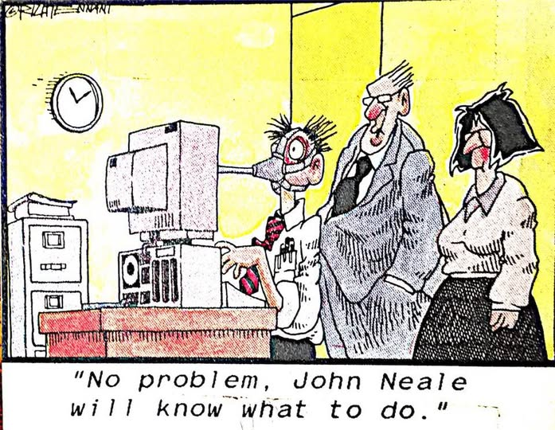

A visual collection of obsolete and rare data storage media formats.
Success at StorageTek didn't come out of nowhere. Long before John became the relentless quality gatekeeper for STK hardware, his uncompromising approach to problem-solving was forged in the mid-70s while working on critical projects for law enforcement agencies. That is where he built the reputation that acted as a calling card, opening doors to collaborations with the most secretive agencies in the US. Before reaching the hardware evaluation labs of STK, his foundation was built at IDLE, where he started in the computer room, moved through operating systems, and ultimately ended up as a lead software engineer in TCAM/NCP.
The Night-Time FBI Test and the Birth of Illinois LEADS
In the mid-70s, while working in the IDLE environment on interstate connections for the law enforcement network, John fully realized the power of the twin S370/155 systems. One night, he happened to be chatting with someone at the FBI NCIC (National Crime Information Center) computer center in Washington. It turned out the FBI was having trouble getting authorization from Washington to upgrade their aging S360 computer capabilities. John proposed an unusual stress test to prove to the decision-makers that their S360 desperately needed to be replaced.

In a very short time, he wrote a "pusher program" specifically to overload the NCIC system with requests (working somewhat like a modern buffer overflow attack). It took just about five minutes of gradually increased stress from his newer S370 system to bring the Washington NCIC system crashing down. Crucially, this was not a rogue operation—crashing the NCIC computer was officially approved by both John's bosses and the FBI bosses! The result? The FBI promptly received a brand new, more powerful S370.
Equally impressive was his architectural approach to building the IDLE TCAM system. John intentionally programmed the system so that a response to an initial query would take an average of 2-3 minutes. This wasn't due to limitations; it was brilliant end-user expectation management. Two to three minutes was exactly the time it took an Illinois state police officer in a squad car to pull over a suspected offender and walk up to the vehicle. The fact that the officer received all the critical data (warrants, vehicle history, and NCIC checks)—including the vehicle owner's information—exactly at that moment allowed them to approach the car and address the driver by name at initial contact (assuming the owner was driving). John actually experienced this firsthand: he was stopped one night, rolled down his window, and the officer immediately addressed him by name!
This precise engineering helped lay the foundation for Illinois LEADS (Law Enforcement Agencies Data System). However, John is quick to point out that LEADS was a massive team effort, and he was just one part of the dedicated team that helped create it.
Extreme Weather and Bulletproof Infrastructure
The mandate for IDLE was 24/7/365 availability to law enforcement agencies nationwide. In central Illinois, this meant surviving extreme weather—from -20°F blizzards with 5-foot drifts in the winter, to over 100°F summers with 100% humidity, localized heavy hail, and severe storms in what was known as 'tornado alley'. John's team learned about power 'the hard way'.
To protect against power grid failures, summer AC overloads, and winter ice storms, they built a massive onsite backup power source. They ran the system on conditioned electricity that went through a UPS (Uninterrupted Power Supply), converting AC to DC and back again to filter out electrical issues, backed by battery banks that allowed a seamless switchover. Behind the batteries, in the basement garage of the State Armory Building, sat a monstrous Caterpillar diesel generator with a huge fuel tank buried just behind the building.
The installation location provided its own stories. The garage was where state officials, including the Governor, parked their cars, protected by round-the-clock guards. During the very first systems test of the power system, the force of the monstrous Caterpillar's cooling fan sucked a guard on station right into the radiator grille! Needless to say, the guards immediately relocated their entry station.
The building itself was an armory, built with thick granite walls designed to withstand heavy attacks. This fortification proved invaluable. When three tornadoes were reported approaching the town simultaneously, the staff gathered at the armored windows of the 5th-floor computer room just to watch them pass by. And when a massive Liebert air conditioning unit had to be replaced following a lightning strike, a specialist had to cut out the armored window so a crane could hoist the new unit in, before re-welding the armored wall back into place.
To maintain this 24/7 coverage, half the computer operators worked rotating 8-hour schedules clockwise, while the other half rotated counterclockwise, ensuring consistency in procedures. Dedication was paramount; staff regularly fought through blizzard conditions and 2-inch thick ice on the roads just to get to work at 11:00 PM. Remarkably, the critical infrastructure staff made it through every single time.
The Grounding Mystery and Lessons Learned
John's deep understanding of electrical systems began long before IDLE. By the time he started high school, he had already studied all 10 volumes of his grandfather's vintage 1920s 'Hawkins Electrical Guides'. This knowledge proved crucial when investigating bizarre computer crashes.
At IDLE, the computer system kept failing on a monthly basis, exactly on the same day of the month and at 2:00 AM on the night shift. John had been a volunteer Civil Defense officer before he even joined IDLE, and as it happened, the statewide Civil Defense ECC was located right next door to the State Armory building. Remembering their quarterly testing of communications equipment, he noted similar issues happening there during those tests. Investigating further, he discovered that the Illinois State Police Emergency Operations Center (ISP EOC), located one floor above the IDLE computer room, was running statewide communications tests at those exact times.
The culprit? 'Ground is not guaranteed to be a good ground.' They discovered that the antenna used by the EOC and the computer power supply shared the exact same ground point on the antenna tower. When the EOC broadcasted, the signal fed directly into the computer's ground. After this discovery, John found similar grounding issues across the state, including an older multistory building where stepper motors in the elevators were inducing high-frequency noise into the grounding, affecting nearby electronics.
The "Dark Side" and Saving Data from the DEW Line
Word of an engineer who could manipulate hardware and data flow with such precision quickly spread through the "three-letter agency" family. Government and military agencies became John's favorite clients. He also held a soft spot for significant medical agencies like ARL (a military research laboratory), NIH, and CDC. This deep appreciation for medical institutions was deeply personal, as his wife was a nurse and John himself had served as a volunteer medical first responder and firefighter.
His first major encounter with the so-called "Dark Side" involved an urgent request from a dark site north of the DEW Line (Distant Early Warning Line). A tape containing invaluable radar data had been physically damaged in an STK tape drive that had suffered a severe power failure.
Using STC POST running the FRIEND portion, John had to instruct an unknown dark agency individual over the phone. Step by step, he coached them on how to issue the correct CCWs to bypass the physically damaged area, re-sync onto the next good record, and safely copy the rest of the data to the EOF (End Of File).
The success of this operation led to numerous requests to recover compromised data from tapes for various other organizations, including an east coast agency and a gulf coast facility (John even got on a first-name basis with the director in charge of computer services for that east coast agency). This baseline of absolute reliability proved crucial even decades later—for instance, when, after the 9/11 attacks, John successfully recovered 97% of damaged Navy satellite data stored on Timberline tapes.
Catastrophic Lightning and Quality Paranoia
Knowing that StorageTek equipment might process such critical defense and intelligence data required the Product Evaluation (PE) team to enforce an absolutely uncompromising rigor. A particular, invisible enemy of electronics was Electrostatic Discharge (ESD)—and John had learned to respect its destructive power early on.
His very first exposure to catastrophic ESD happened back at IDLE. Lightning is the most destructive form of ESD, and he discovered that one night when a lightning strike hit the flagpole right outside the window of their 5th-story computer center. The surge entered the facility and damaged one of the S370/155s. Even though he was scheduled to be off rotation for two days, John worked on his own time for almost 24 hours straight to get that 155 running again alongside an IBM CE (Customer Engineer) named Don S. (nickname "Ski," a man of Polish heritage who was part of a group of friends that crossed paths, formed a friendship, and played cards monthly—John being just one of the group). They replaced fried cards and a huge mainframe power cable that had been melted almost in half by the energy surge. Ski even gave John the melted plug and cable as a little souvenir. That intense 24-hour repair is exactly how John learned the deep internals of S370 mainframes.
This awareness carried over to STK. When he first started working at IDLE, there were certain clothing rules imposed on ALL staff—both male and female—specifically to minimize any ESD issues. At STK, anti-ESD procedures, mainly in circuit board manufacturing, became draconian. Workers had to utilize ESD procedures, including grounding wristbands, and wear special blue ESD-proof coats. Because of their attire, these employees were nicknamed "SMIRFs"—a humorous nod to the popular blue cartoon characters, The Smurfs, which they didn't really like but were stuck with.
The PE team was also required to wear ESD protective gear, though John, disliking the blue smock, ordered a custom white ESD long lab coat for himself! These procedures extended to Field Engineers (FEs) too. Repair parts sensitive to ESD were packaged in ESD protection, and FEs had to use wristbands grounded to machine frames to avoid accidental ESD damage when servicing inside open doors.
During testing, the evaluation team showed no mercy. While PE didn't zap inside the open covers of equipment, anything external was considered "fair game." The engineers took their ESD guns and ruthlessly zapped latches, channel interface cable ports, command/control cables, knobs, levers, switches, and buttons.
However, ESD was just one piece of the puzzle. There were many layers of tests involved. Combined with grueling environmental shipping tests in extreme temperatures (up to 135-140°F), 4-corner testing at operating environmental limits stress analysis, and extensive power tests—including powerline sag, surge, low line, high line, and combined multi-CPU loading—the goal was simple. John never stopped adding to the "lessons learned." The team did their absolute best to ensure the equipment was as bulletproof as possible and best prepared to survive in any customer environment.
Bonus: The Logic of the 9310 Dodecahedron
Those meticulous lessons in engineering design directly influenced iconic STK hardware like the 9310 tape silos. When examining a silo, one might wonder why it was built as a dodecahedron (12-sided) rather than a perfect circle, considering the robotic arm sweeps in a 360-degree circle inside. The answer? Thermal expansion.
In the 1970s, IBM had built an earlier MSS system that stuffed data cylinders into a honeycomb-like storage arrangement between the storage cells. That system didn't account for thermal expansion, leading to infamous issues when temperatures rose. Improper alignment caused the mechanism to fail—it didn't just jam in the cylinder; the mechanism attempted to put them back between the cells, which smashed the cylinders and damaged the cells themselves.

Later, in response to STK's silo, IBM built a different system utilizing a modern industrial robot on tracks along a long linear box. However, long structures also suffer from expansion problems, which meant IBM had to install crash stops because their robot had a tendency to run into the end of its track-stopping mechanism.
For STK, the rotating robot inside a dodecahedron was a brilliant, simple solution to thermal expansion. The 12-sided structure provided an "almost circle." This made it significantly simpler to adjust the rotation alignment and compensate for temperature variations using easily calculated geometries, while the flat panels made manufacturing, shipping, and assembly far easier than dealing with curved surfaces.